Datacamp Docker Course
Section 1: Containers and their advantages
Prerequisites
Before taking Introduction to Docker, we advise completing the prerequisite course. A basic understanding of how to work with Shell is needed in this course. We’ll use nano extensively to edit files, together with several commands to find our way around the file system.
Containers
In this first chapter, we’ll give an introduction to containers, Docker, and give insight into the differences between containers and virtual machines. A container is a portable computing environment. It contains everything needed to run a workflow or application, including dependencies, code, and configuration.
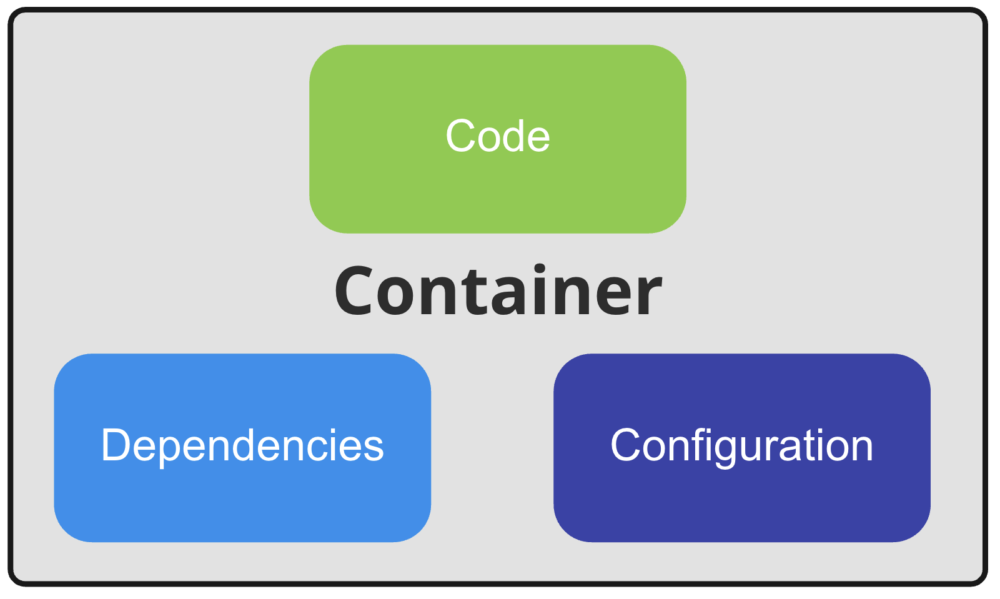
Making it less abstract
We can think of a container like a new computer on which we copy our code or workflow and install all needed dependencies. Once everything is installed and configured, we make backups of that computer. Imagine we could now use that backup on another computer, and everything we installed and configured would work just like it did originally. This backup is similar to a container; both are a packaging of code together with its dependencies (including the operating system) and configuration. That’s where the analogy ends since a container has many advantages over something like a backup.
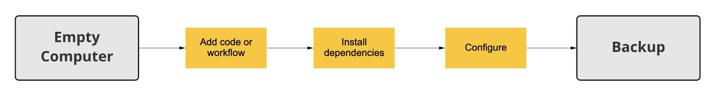 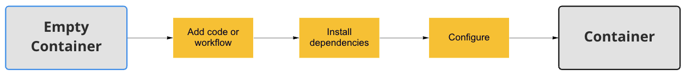
Containers run identically every time
One of the main benefits of containers is that whenever a container is run, the workflow or application it contains will behave identically. That is to say; containers provide reproducibility. Reproducible means we have a container X that gives an output Y; every time it is run, now, in five minutes or two months, for the same input, it will give identical output.
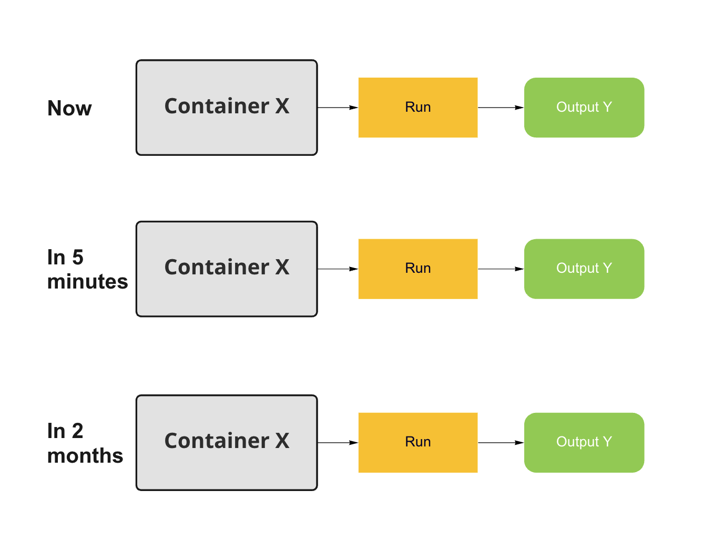
Containers run identically everywhere
The second main benefit of containers is that wherever a container is run, it will behave identically, containers provide portability. Portable means the container will run the same on our computer, your colleague’s computer, and the cloud. No risk of removed dependencies, lost configuration files, or other changes that break our application.
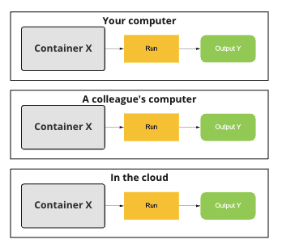
Isolation
This is possible because of isolation between the container and the rest of the environment; running a container will have no impact outside of the container and vice versa. Anything happening outside the container will not affect the result of a container. A container has limited resource access to the operating system it is running on; everything else is kept separate.
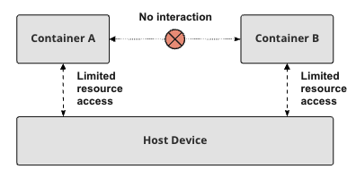
Containers provide security
Because containers are completely isolated from each other, even if the security of one container is compromised, the other containers on the same host, and the host itself remain secure since there is no direct communication between containers. The compromised container still only has access to limited resources on the host and nothing more. This makes containers not only great for safely deploying applications but also for quickly prototyping workflows. You can be sure that whatever you do in the container won’t affect anything outside of it and that you can start with a clean slate at any point.
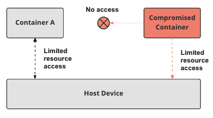
Containers are lightweight
Containers not only provide security, portability, and reproducibility. An additional advantage of containers is that they are lightweight, or in other words, use few extra resources in comparison to running an application outside of a container. Containers have little overhead compared to alternatives that also provide isolation. This is especially relevant when comparing containers to virtual machines, which we will do in detail later on.
Containers and data science
All these advantages make containers relevant for data science; containers make any task or workflow automatically reproducible not only on our own machine but also everywhere else. Containers help us avoid many issues when sharing our work; dependencies are automatically included, and so are datasets. Most importantly, we can be sure our code will work on our colleague’s machine. Additionally, the lightweight nature of containers makes them easier to share than alternatives.
Exercises
Exercise 1: What is included in a container?
A container is a portable computing environment, but what is included exactly?
A container contains dependencies and code needed to run a workflow or application, but you have to configure your application from outside the container.
A container contains the configuration and code needed to run a workflow or application, but you have to install dependencies separately.
A container contains dependencies and configuration needed to run a workflow or application, but you can not put your code into a container.
A container contains everything needed to run a workflow or application; dependencies, code, and configuration.
A container contains everything needed to run a workflow or application; dependencies, code, and configuration.
Exercise 2: Advantages of containers
We saw a lot of advantages of containers. Can you remember what they were exactly?
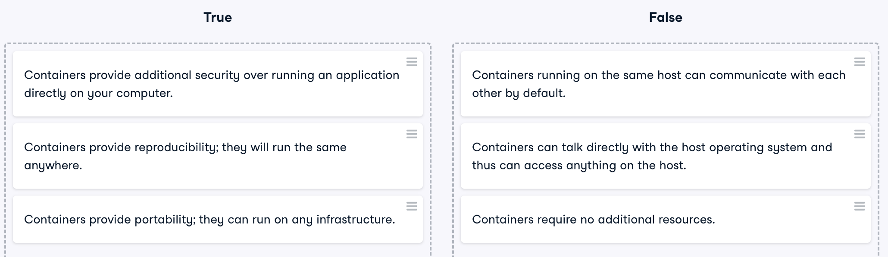
Section 2: The Docker Engine
Docker is an open-source tool that allows us to create, run and manage containers. Docker first launched in 2013, and even though containers had existed for more than a decade, it was with the launch of Docker that containers exploded in popularity.
Docker ecosystem
Over time, Docker has grown to be part of a large ecosystem of tools around containers; we will focus on Docker Engine, which is everything you need to create, run and manage containers. Other parts of this ecosystem are, for example, Docker Compose, a tool for defining and running multi-container Docker applications, and Kubernetes, a system for container scheduling and management.
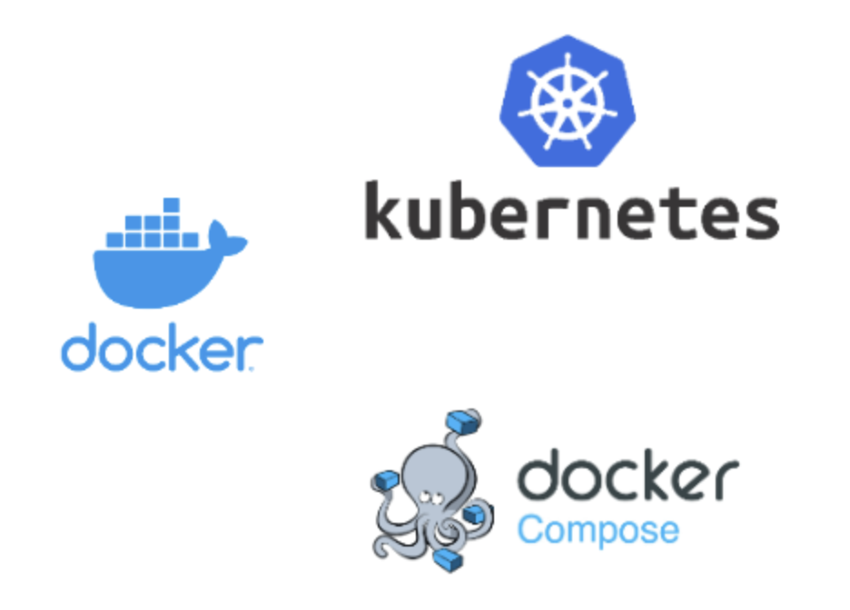
Docker Engine
Docker Engine1 has two main parts: server and client. The client, called Docker client, is a command line interface used to talk to the server. The server is a background process that requires no user interaction, which is called a daemon, a term we will encounter repeatedly to reference the Docker server. In addition to the Docker client and daemon, Docker Engine also includes so-called API specifications, which define how you can interact with the Docker Daemon. These APIs are not only used by the Docker client to talk to the daemon but also specify how other applications can work with the daemon.
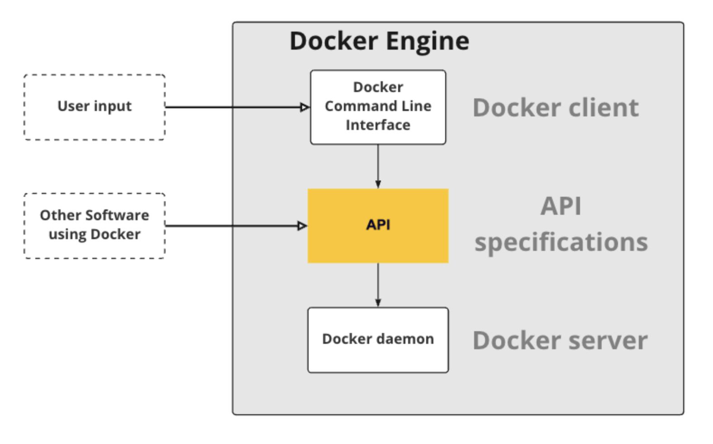
The Docker daemon
The Docker daemon2 is responsible for managing all Docker objects, such as images, containers, and more. However, we can’t directly tell the daemon what to do; we need a client to give us a human-usable interface to it. Here the Docker command line interface is the default option, but there are others, like Docker Desktop, which gives us a Graphical User Interface to manage our containers.
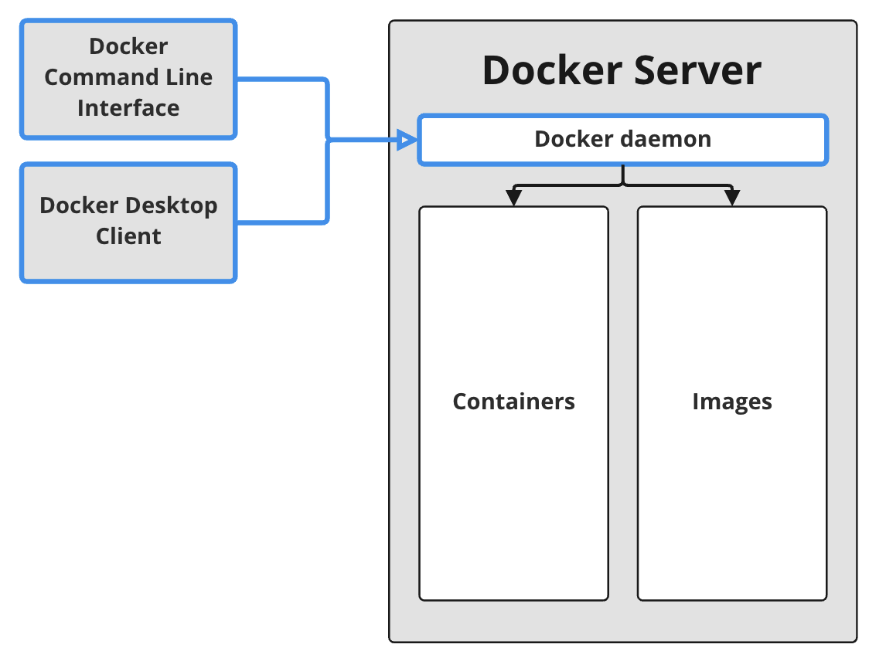
Images and Containers
The daemon manages both images and containers, but there is a difference between them. While an image is a blueprint or recipe, like an idle copy of a hard drive with all the software we want to run, a container is a running image, like a copy of that same hard drive plugged into a running computer. We could create an image with Ubuntu and python3 point 9 installed. Once we start this image, we’ll have a running container with Ubuntu and python3 point 9 where we can execute our code.
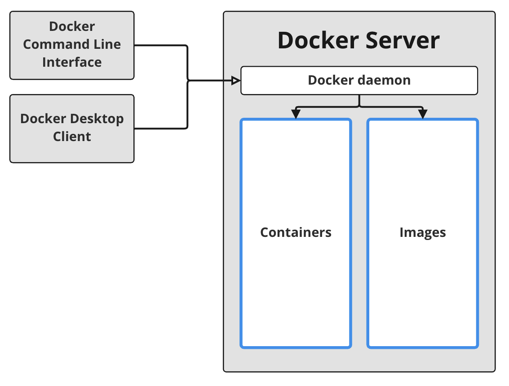
Containers are processes
Up until now, we talked about containers abstractly. To better understand containers, we can think of them as processes. When we start a container, a process is started, just as when we start a text editor, Spotify, or any other application. What makes a container process different is its permissions to resources like the file system, memory, and network.
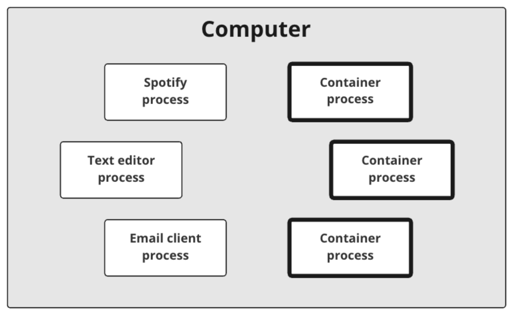
Containers are processes
For many resources of a container process, not only is access restricted, but they are also undetectable to the process. For example, instead of seeing all the files on your hard drive, the process is given access to only a single folder and cannot see files outside of that folder.
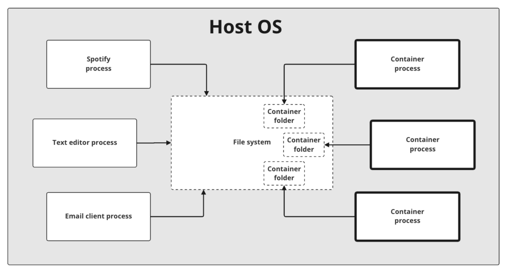
Containers are isolated processes
Not only blocking access to but also hiding resources may seem like a small difference, but it allows running a process that is isolated from the rest of the machine. This lets an entirely separate operating system run inside the process. A container runs its own operating system instead of using the host operating system. The Docker daemon ensures that the OS running in the container is unaware of other containers and the host OS. The operating system inside the container can start and manage it’s own processes without interfering with any processes running on the host OS. In other words the operating system in the container is separated and kept unaware of anything happening outside itself, isolated from anything on the host and other containers.
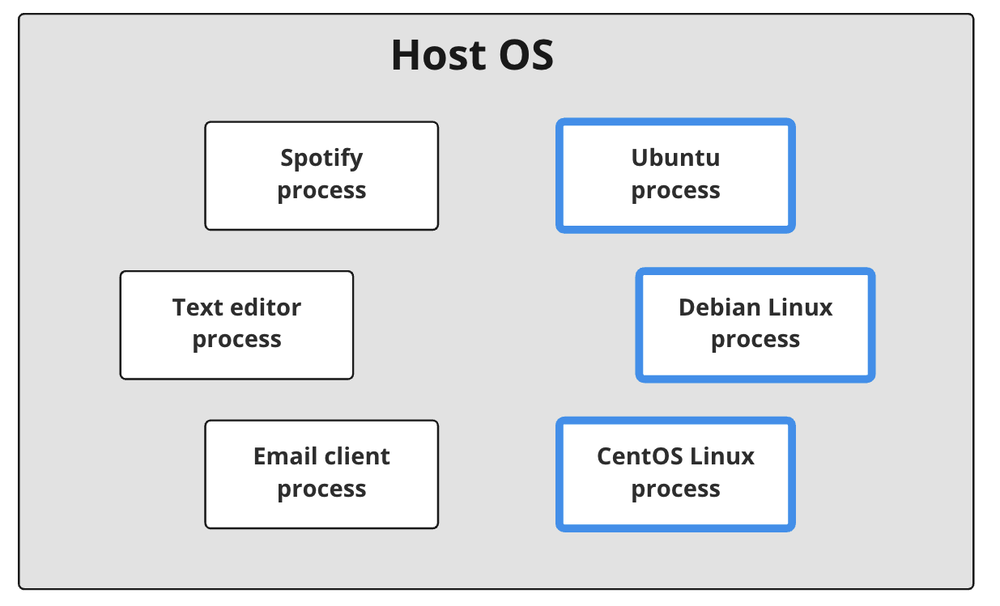
Exercises
Exercise 1: Which parts does the Docker Engine consist of?
Docker is part of a now much larger ecosystem of applications built to support containers in various ways. Starting out on our journey to understand and use containers, we’re focusing on the Docker Engine and its components. Of which parts does the Docker Engine consist?
Just the Docker daemon, other applications like the Docker client can then use the Docker daemon to work with containers.
The Docker daemon, Docker client, and Docker Compose. The latter is used for multi-container applications.
The Docker daemon, Docker client, Docker Compose, and Kubernetes are everything you need to run complex container setups in production environments.
The Docker client and daemon together make up the Docker client-server interface of Docker Engine.
The Docker client, daemon, and its API specifications.
The Docker client, daemon, and its API specifications.
Exercise 2: Containers and images
Getting an intuitive understanding on Docker and the many new concepts surrounding it can be difficult, especially the difference between images and containers can seem blurry because they are closely related. Did you fully grasp the difference?
An image is just a different name for a container, but they really mean the same thing.
Containers are what you use in the Docker ecosystem; images are just the more general name.
Images are blueprints, while a container is a running image, the image is just the template it got started from.
Containers are blueprints; while an image is a running container, the container is just the template it got started from.
Images are blueprints, while a container is a running image, the image is just the template it got started from.